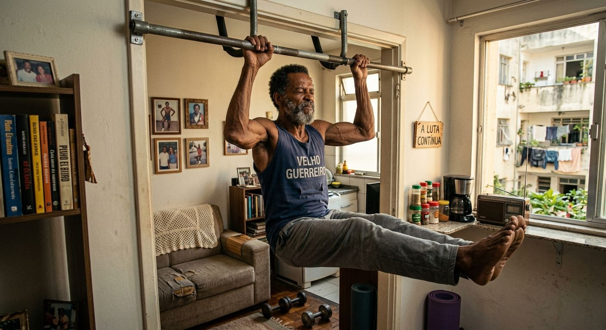

Treino de Força em Casa Após os 40: Como Ganhar Músculos Só com Barra Fixa e Calistenia
Você não precisa de uma academia lotada e cheia de máquinas caras para construir um corpo forte após os 40 anos. Com apenas uma barra fixa de porta e o peso do seu próprio corpo, é possível montar um treino de força completo, seguro e extremamente eficiente para ganhar massa muscular e proteger suas articulações.
A calistenia é a melhor aliada do homem 40+ porque ela respeita a biomecânica natural do corpo. Ao contrário das máquinas que travam seu movimento, os exercícios com peso corporal fortalecem tendões, melhoram a postura e aumentam a estabilidade do core, pontos cruciais para longevidade.

1. A Base: Os 4 Exercícios que Não Podem Faltar
Para um treino completo em casa, você precisa cobrir os 4 movimentos básicos do corpo humano. Se fizer só esses 4, 3 vezes por semana, já terá resultado:
- Barra Fixa (ou Remada na porta): O melhor exercício para costas e bíceps. Se ainda não faz nenhuma, comece com a remada inclinada segurando na porta ou com elástico por baixo dos pés para te ajudar a subir.
- Flexão de Braço: Peitoral, ombro e tríceps. Após os 40, faça com as mãos um pouco mais afastadas que o ombro para proteger o ombro. Se for difícil no chão, comece com as mãos apoiadas em uma mesa.
- Agachamento Livre: Pernas e glúteos. Foque em descer até 90 graus com controle de 3 segundos. Isso vale mais que colocar peso nas costas.
- Prancha Abdominal: O segredo para acabar com a dor lombar. Segure 30 a 45 segundos mantendo o abdômen travado.
2. Como Montar a Rotina de Treinos sem Lesões
O erro mais comum após os 40 é querer fazer todo dia até a falha. Seu músculo cresce no descanso. A divisão mais segura para treinar em casa é:
Treino A (Segunda e Quinta): Foque em empurrar e pernas. 3 séries de 8 a 12 Flexões + 3 séries de 15 a 20 Agachamentos + 3 Pranchas de 40s.
Treino B (Terça e Sexta): Foque em puxar e core. 4 séries de 5 a 8 Barra Fixa (ou remadas) + 3 séries de 12 Afundo + 3 séries de 15 Elevação de pernas no chão.
Descanse 90 segundos entre as séries. Isso mantém sua frequência cardíaca alta e protege suas articulações, diferente do descanso curto de 30s que fadiga demais quem tem mais de 40.

3. Progressão: Como Continuar Ganhando Força Sem Anilhas
Na academia você aumenta o peso. Na calistenia, você aumenta a dificuldade do movimento. Essa é a chave para hipertrofia contínua após os 40 sem precisar comprar nada:
Quando 12 flexões normais ficarem fáceis, não faça 20. Evolua para flexão com pés elevados ou flexão diamante. Quando a barra fixa com 8 repetições ficar fácil, faça com 3 segundos descendo devagar (fase negativa). Isso aumenta a tensão muscular e gera o mesmo estímulo de colocar 10kg a mais na barra.
Conclusão
Treinar força em casa com barra fixa e calistenia não é um quebra-galho, é uma escolha inteligente para quem passou dos 40. Você ganha tempo, economiza dinheiro, treina no seu ritmo e, o mais importante, constrói um corpo funcional que te protege no dia a dia. Comece com o básico bem feito e a consistência fará o resto.